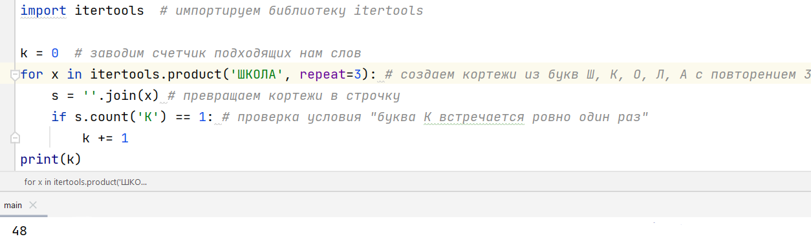
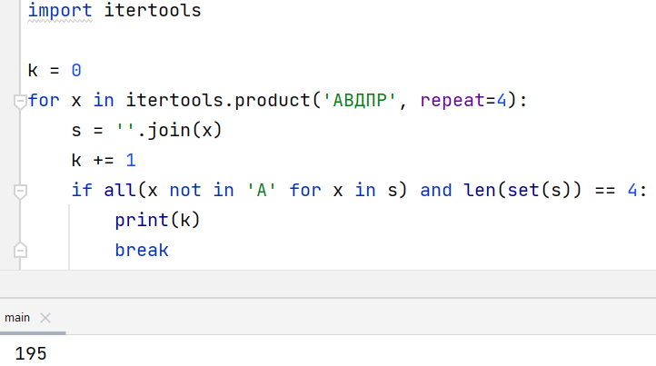
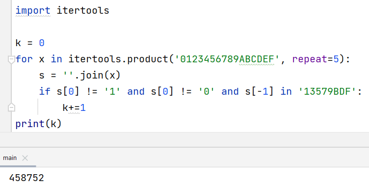

| Теория | Подсчёт слов | Номер слова в списке | Числа | Практика |
|---|
Комбинаторика в чистом виде в ЕГЭ по инфорамтике встерчается только в восьмом задании. И, казалось бы, достаточно выучить все шаблоны, те же itertools, и дело в шляпе. Однако необходимо понимать, как работает тот или иной элемент в этих шаблонных кодах. Ведь если вам, вдруг, попадется чуть нестандартное задание или новая формулировка, вы растеряетесь и, скорее всего, упустите возможность забрать ценный балл. Ниже вы увидите краткую теорию по некоторым основным темам, которые встречаются в 8 задании КЕГЭ; а именно 'подсчёт слов с ограничениями', 'поиск номера слова в упорядоченном списке' и 'подсчёт чисел, удовлетворяющих определенным условиям'.
Первый тип - подсчёт слов с учётом ограничений.
В заданиях такого типа нам дается, в большинстве случаев, набор букв,
из которых необходимо составить слова, и условия, которые нужно
учесть при самом составлении (стоит отметить, что в 8 задании словом
считается любая последовательность букв, необязательно осмысленная).
Рассмотрим несколько примеров:
Игорь составляет таблицу кодовых слов для передачи сообщений, каждому сообщению соответствует своё кодовое слово. В качестве кодовых слов Игорь использует трёхбуквенные слова, в которых могут быть только буквы Ш, К, О, Л, А, причём буква К появляется ровно 1 раз. Каждая из других допустимых букв может встречаться в кодовом слове любое количество раз или не встречаться совсем. Сколько различных кодовых слов может использовать Игорь?
Разберем сначала "ручное" или же "аналитическое" решение.
Однако иногда встречатся задачи с очень большим ответом,
который праткически невозможно получить вручную, и тут на помощь нам
приходит замечательная библиотека itertools.
Снизу представлено программное решение нашей задачи:

Рассмотрим 2 основных итератора модуля itertools.
1. product
Итератор product рассматривает все возможные варианции слов
for x in itertools.product('ABCD', repeat=4):
s = ''.join(x)
print(s)
Результатом будут слова вида AAAA, BBBB, CCCC, DDDD, AAAB, AAAC и так далее
2. permutations
Итератор permutations рассматривает все возможные варианции слов, где каждая буква встречается ровно один раз (от английского - перестановки).
for x in itertools.permutations('ABCD', r=4):
s = ''.join(x)
print(s)
Результатом будут слова вида ABCD, ACBD, ACDB, ABDC, BACD, BCAD и так далее
Второй тип задач - найти номер слова в упорядоченном списке.
Все 4-буквенные слова, составленные из букв П, Р, А, В, Д записаны в алфавитном
порядке и пронумерованы.Вот начало списка:
1. AAAA
2. AAAB
3. АААД
4. АААП
5. АААР
6. ААВА
...
Найдите номер первого слова в этом списке, которое не содержит
гласных и одинаковых букв.
Ручное решение таких задач заключается в "кодировке" букв в n-ной системе счисления.
Программное решение практически ничем не отличается от предыдущей задачи, кроме того, что теперь k - это номер слова в списке и самим условием, при выполнении которого происходит break, что позволяет сразу найти первое подходящее слово.

И последний тип задач - составление чисел. В общем, никаких отличний от первого типа здесь нет, кроме как в 1-м случае у нас буквы и слова, а здесь цифры и числа. Единственное, что важно запомнить - число не может начинаться с нуля.
Определите количество пятизначных чисел в шестнадцатеричной системе счисления, которые не оканчиваются чётными цифрами и не начинаются с цифры 1.
Аналитически такие задачи решаются в точности как первый тип.
Тут сложность программного решения заключается в том, что цифры 10, 11, 12, 13, 14 и 15 необходимо обозначить, как А, В, С, D, E, F в значении product и в дальнейшем работать уже с такими значениям.

Определите количество шестизначных чисел в пятеричной системе счисления, которые не оканчиваются цифрами 3 или 4 и не начинаются с цифры 1.
Лида составляет слова из букв С, Е, П, И, Я. Каждая гласная буква встречается в слове не более двух раз. Каждая согласная может стоять в слове на первой позиции, либо не встречаться вовсе. Сколько слов длиною более двух символов может составить Лида?
Ученица составляет 5-буквенные слова из букв ГЕПАРД. При этом в каждом слове ровно одна буква Г, слово не может начинаться на букву А и заканчиваться буквой Е. Какое количество слов может составить ученица?
Лера составляет пятибуквенные слова из букв Л, О, Г, А, Р, И, Ф, М, причём никакие две гласные или две согласные не должны стоять рядом. Буквы в слове не должны повторяться. Сколько слов может составить Лера?
Настя составляет шестибуквенные слова из букв Т, Ь, Ю, Р, И, Н, Г, причём мягкий знак не может стоять в начале слова и после гласной. Все буквы слова различны. Сколько таких слов может составить Настя?
Шифр кодового замка представляет собой последовательность из шести символов, каждый из которых является цифрой от 1 до 9. Сколько различных вариантов шифра, не начинающихся с цифры 5, можно задать, если известно что цифра 2 должна встречаться в коде ровно два раза. Все цифры кроме двойки могут встречаться в шифре любое количество раз или не встречаться совсем.
Определите количество пятизначных чисел, записанных в десятичной системе счисления, учитывая, что числа не могут заканчиваться на цифры 3, 4 и 7 и не должны содержать тройки соседних одинаковых цифр (например, 000).
Максим составляет четырехбуквенные слова из букв П, О, Л, Я, К, В, причем известно, что ровно две буквы на тех же позициях, что и в слове ВОЛК. Сколько различных слов может составить Максим?
Все четырёхбуквенные слова, в составе которых могут быть только русские буквы Б, У, Л, К, А записаны в
алфавитном порядке и пронумерованы начиная с 1.
Ниже приведено начало списка.
1. AAAA
2. AAAБ
3. АААК
4. АААЛ
5. АААУ
6. ААБА
...
Под каким номером в списке идёт последнее слово, в котором все буквы различны?
Петя составляет четырехбуквенные слова из символов КЕГЭ2023 и записывает их в алфавитном порядке
в список. Вот начало списка
1. ГГГГ
2. ГГГЕ
3. ГГГК
4. ГГГЭ
5. ГГГ0
6. ГГГ2
7. ГГГ3
8. ГГЕГ
...
На какой позиции будет стоять первое слово, начинающееся с цифры, и не содержащее двух подряд
идущих одинаковых символов?
Больше задач здесь